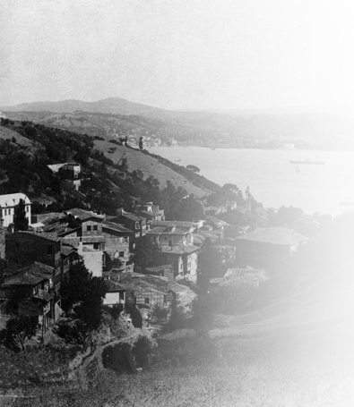

Nişantaşı’nda doğduğum evde oturuyorduk. Babamın annesi ve cicianne dediğim amcamın refikası henüz hayatta idiler. Amcazadem Mehmed Ali Bey de çoluk çocuğuyla beraber bu evde ikamet ediyordu. Amcazadem babamdan altı ay daha yaşlıydı. Babam onun amcasıydı, o babamın ağabeyiydi. Babamın o tarihte vefat eden ilk kız evladından ve refikasından[70] sonra bir oğlu vardı: Bendeniz. Evimiz çok kalabalıktı. Amcamın damatları da bizde otururlardı. Bunlardan başka da hanegîler vardı. Eski dadılar evlenmiş gitmiş, sonra yine gelmiş, azatlılar hep bizde yerleşmişlerdi. Bereket versin evin üst katındaki odalar bize ayrıldığı, yemeklerimizi de burada yediğimiz için nispeten rahat bırakılıyorduk. Fakat çocukluk bu ya, fırsat buldukça aşağı katlara kaçmaktan kendimizi alamazdık.
Yalnız mektepten kaçamazdık. Mahalle mektebindeki hocamız buna imkân vermezdi. Bizi hem dikkatle okuturdu, hem de bizimle uzun uzun konuşurdu. Evimizin de müdavimlerinden olduğu için de kendisinden fazla korkardık. Ancak işimiz bu kadarla da bitmezdi. Başımızda iki murakıp daha vardı: Lâla ve dadı. Selamlıkta dolaşırken ve oynarken, sokakta gezerken, mektebe gidip gelirken lâladan, haremde veya bahçelerde bulunurken dadıdan ayrılmazdık. Vazifeleri yalnız bizimle meşguliyeti olduğu için ne derlerse onu yapardık. Evdeki odalarımızda birbirimize ziyafetler verirdik. Komşulara gider, gelirdik. Sütlü çikolatalar davetleri yapardık. Boş vaktimiz yoktu zaten. Komşularımızdan, lâla veya dadılarımızla gittiğimiz evlerden, birbirimize ziyafetler verdiğimiz arkadaşlardan ve o evlerden hatırımda kalanlar şunlardır:
Necip Paşa Konağı
Necip Paşa Konağı, 1866 (Kaynak: wowTURKEY.com)
Hâlâ yerinde durur. Nişantaşı Teşvikiye Karakolu’nun karşısındadır ve bugün [1946] bir mekteptir. Bu konak Necip Paşa veresesinden Hazine-i Hassa’ya, Hazine-i Hassa’dan Sadrazam Cevad Paşa’ya, Cevad Paşa’dan yine Hazine-i Hassa’ya ve Sadrazam Avlonyalı Ferid Paşa’ya; Meşrutiyet’te bir kulp takılarak ve Ferid Paşa’dan istirdat olunarak[71] Maliye’ye; Maliye’den dönüp dolaşıp mektebe geçmiştir. Hariçten manzarası basit ise de dâhili çok güzeldir. Hele yemek odası mükemmeldir. Merdivenleri yayık ve şahanedir. Sadrazam Cevad Paşa İstanbul’daki büyük zelzeleden sonra bahçesine bir ahşap konak ilave etmişti.
Kıbrıslı Sadrazam Kamil Paşa Konağı
İntizamıyla meşhurdu. Aşırı kalabalıktı da! Düzineyle evlatlar, dadılar, matmazeller, hocalar, yaverler, çavuşlar, misafirler burayı bir düğün evine çevirmişlerdi. Harem dairesine bizzat hanımefendi, selamlığa ve bütün hesaplara da paşanın oğullarından Abdullah Bey bakardı. Bu Abdullah Bey sonraları Maliye Nâzırı olmuştur. Konakta sadrazam paşanın mühürdarı Kıbrıslı Asaf Bey’in ziyaretçileri sadrazama haber vermek, götürüp getirmek bahsinde yorucu vazifeleri vardı. Çok iyi bir adamdı. Gevezeler bu konakta harem kapısından girince antreye konan aynayı beğenmezlerdi.
Kürt Said Paşa Konağı
Kamil Paşa konağından biraz Maçka’ya doğru aşağıda ve bahçe içinde kâindi. Hariciye Nâzırlığı’nda bulunduğu zaman daha neşeli olan Said Paşa pek misafir kabul etmezdi. İş için gelenlerin Babıâli’ye gitmelerini tercih ederdi. Ramazan iftarları, bayram tebrikleri müstesna hemen hemen misafirsiz olurdu. Fakat küçük oğlu Fuad Bey (Fuad Paşa), arkadaşa düşkündü. Dairesi boş kalmazdı. Süvari zabiti olduğu için güzel atları kısrakları vardı. Bu işten iyi anlardı.
Şapur Said Paşa Konağı
Bugün [1946] Kız Enstitüsü’dür ve merhumun yaptırdığı son konaktır. Evvela bu binanın karşısındaki kocaman bir bahçe içinde kâin ahşap konakta ikamet ederdi. Sonraları bunu oğlu Ali Namık Bey’e kızı ve damadı Nuri Bey’in ikametine tahsis etti. Bu konak yandı ve bugün satılan arsası içinde kırk elli apartman inşa edildi. Eski güzellik ister istemez kayboldu. Bahçeden eser kalmamıştır. O zamanki rivayete göre Said Paşa’nın kalabalık ailesinden başka gailesi yoktu. Kamil Paşa gibi maaş yetişmeyecek kadar masrafı da yoktu. Bu konağın hususiyeti hünkârın Said Paşa’yı izaç için[72] verdiği emirler üzerine, kapısının önünde ve alçak hasır iskemleler üzerinde oturan iki hafiyeden ibaretti. Fakat tehlikeleri yoktu.
Tunuslu Hayreddin Paşa Konağı
Nişantaşı konaklarının en şahanesiydi. Bir defa ahşap bina cidden güzeldi. Merdivenler, odalar, salonlar, sofalar, yüksek tavanlar, bronz avizeler, billur aplikler ve şamdanlar birbirine layık ve hakikaten imtizaçlı[73] ve revnaklı idiler. Her şey gülerdi. Paşa, misafir olmadıkça kütüphanesinde oturur; sık sık hareme girer, çıkar; oğullarının tahsiliyle tıpkı Tophane Müşiri Zeki Paşa gibi bizzat meşgul olur ve onların her şeyden evvel dine merbut ve hürmetkâr olmalarını temine çalışırdı. Dört oğlu, nur topu gibi de bir kızı vardı: Behiye Hanımefendi. Bu hanımın düğününü hatırlarım. Sadrazam Fuad Paşa hafidi[74] Şişman Reşad Fuad Bey’le evlendiler. O kadar hatırlarım ki, babamla canciğer olan Reşad Bey düğün günü bize gelmiş, bizde giyinmiş kuşanmış, kendisine çeki düzen vermiş, babamla beraber Hayreddin Paşa’nın konağına kadar giderek usule riayeten kayınpederinin elini öpmüş koltuğuna oturmuştu.
Reşad Fuad Bey de çok güzel bir adamdı. Karı koca hakikaten birbirine çok yaraşmış, yakışmıştı. Hâlâ hatırımdadır, koltuk merasimi icra edilirken evin içinde çörek otları yakıldı, dumanları savruldu. Bu da Tunus usulü imiş; öteye beriye mavi renkli nazar boncukları atıldı; dualar edildi. Koltuktan sonra damat selamlığa çıkarken gelin odasından başlayarak ortalığa paralar serpildi. Sultan II. Abdülhamid’in hazinedarlarıyla yolladığı kırmızı atlas keselerden fışkıran yarım ve çeyrek liralık altınlar kalabalığı yerlere serdi, kapıştılar. Bir sevinç çığlığıdır koptu. Bu da aklımdadır. Ben de havalara savrulup yerlere düşen liralar başımdan aşağı yuvarlanırken birkaç tanesini adamakıllı yakalamıştım. Bu konaktan da bugün eser yoktur. Yalnız arsası kalmıştır ve Nişantaşı tramvay durağının karşısındaki köşede posta kutusunun asılı bulunduğu duvarın içindeki büyük arsadır. Bu hale gelinceye kadar da epeyi sahip değiştirdi.
Diğer Konaklar
Bir kalabalık konak da Başmabeyinci Osman Bey’in ikametgâhıydı. Fakat bu konak resmî bir konaktı. Yani mabeyin ve başmabeyincilerine mahsus bir konaktı. Hazine-i Hassa’nın malı idi. Bir tıpkısı da yanındadır ve hâlâ oldukları gibi dururlar. Bu da başkâtiplere mahsustu. Şimdi [1946] biri hastane, diğeri mekteptir. Osman Bey’in oğulları Ömer ve Saim Beyler ve kız çocukları akraba ve evin emeklileri hepsi bu konakta toplanmıştır. Amcamla Osman Bey (başkâtip, başmabeyinci) çok sevişirlerdi. Ailece görüşürdük. Çocuklarıyla da biz bahçelerimizde koşar, oynardık. Bu Osman Bey, Osman Bey Matbaası’nı kuran bu zattır.)
Bugün [1946] Nişantaşı’nda Güzelbahçe Sokağında Amerikan Hastanesi’nin bulunduğu mahalde Tophane Müşiri Zeki Paşa’nın konağı vardı. Hususiyeti de evin hocalarla, matmazellerle ders odalarıyla âdeta bir mektep gibi olması idi. Zeki Paşa evlatlarının her birine en mükemmel bir şekilde birkaç lisan okutup yazdırmıştır. Her akşam oğullarını ve kızlarını yemekten evvel bir iki saat imtihan ederdi ve o günkü dersleri beraber tekrar ederdi.
Sadrazam Halil Rıfat Paşa’nın ve Mahmud Celaleddin Paşa’nın konakları da buralarda, Güzelbahçe Sokağı civarında idiler. Mahmud Paşa’nın konağı yanmıştır. Halil Rıfat Paşa’nın konağı bugün [1946] lisedir. Lise olan konak hâlâ veresesinin elindedir. Lise olmazdan evvel de kiraya verilmişti. Her ikisi de ahşaptır. Sadrazam Kamil Paşa Meşrutiyet’ten sonraki sadaretinde burada ikamet ediyordu. Çünkü kendi konağını Hazine-i Hassa satın almış, Münire Sultan’a (Maslup[75] Damat Salih Paşa’nın zevcesidir) vermişti. Sonraları Mekke Emiri Şerif Ali Haydar Paşa da Suriye’ye gidinceye kadar bu konakta oturmuştur.
Münire Sultan Sarayı
(Kaynak: wowTURKEY.com)
Başkâtip Süreyya Paşa’nın konağının yeri bugün apartmanlarla doludur. Emek Apartmanı’ndan Yayla Apartmanı’na kadar ve arkalarında Cennet Bahçesi’ne kadar devam eden büyük bir arsa üzerinde kâin bir konaktı ve fevkalade bir nezareti vardı. Bir de mükemmel limonluğu vardı. Süreyya Paşa’nın vefatından sonra bu konak kayınpederime, sonra Hariciye konaklığına, en sonra da arsası ifraz olunarak[76] şuna buna intikal etti. Elden ele atılmaktan gayri bir hususiyeti yoktur.
Akşam, 24 Ekim 1946

1900’lü yılların başı, Bebek’ten Boğaz’a bir bakış